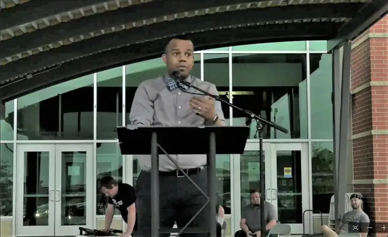

MOORHEAD — The evening of the June 4 Unite in Prayer ecumenical event to pray for peace in our community, Beth Schaible worked late. With storm clouds looming, she decided to head home to watch the gathering online rather than join the hundreds in vehicles at Scheels Arena in south Fargo.
She yearned to connect with fellow Christians somehow, she says, just days after rioting downtown Fargo erupted following George Floyd’s death in Minneapolis.
“I know they wanted some of the protests to be peaceful, but it had gotten out of hand, and I was fearful about what would happen to our community,” says Schaible, who attends Triumph Lutheran Brethren. “I just knew that, through Christ, we would have the answer.”

It’s a spiritual battle, she added, and praying as a community seemed an important way to begin a needed healing process.
Hundreds of vehicles were at Fargo’s Scheels Arena on June 4 for the United in Prayer ecumenical event. Special to The Forum
“Let’s face it, we all have sinned. We all have done things wrong against somebody else,” she says. “And the way we overcome that is through dealing with each other in love, and through forgiveness and repentance through Christ.”
Nearly two months later, the event continues to resonate in the hearts of those who watched and took part. The Rev. Beth Nelson of West Fargo’s Prairie Heights Church, though one of the initial planners, says the idea was to unify our church communities at a time when we really needed one another.
“I think when tensions are really high, it’s important to turn to God and ask God what he wants each of us to do, not only on an individual basis but as a collective basis,” she says, adding that too often, political agendas motivate.
“God only has one agenda. He has said from the beginning he created everyone in his image. He created the vast ethnicities in this world, and calls all of us to love each other. In our humanness, we don’t always get that right.”

Humility is key in moving forward, Nelson adds.
“In three days, we pulled together for a fairly large event,” with a team comprising Christians of varied denominations. “It was people sharing from their heart and asking God to help. And it wasn’t meant to last just one night.”
Pastor Paul Nynas of Hope Lutheran Church in Fargo gladly jumped at the invitation to join the gathering.
“We recognized there was a lot of hurt and a lot of pain in our world, and especially for minorities and people of color,” he says. “Our goal was to come together and lift up the whole situation in prayer and in love.”
Nynas says he felt encouraged and hopeful. “But there’s a part of your heart that’s broken by the sin of the world, so it’s hopefulness mixed with a sorrow.”

The event included worship music and short talks and prayers offered by various individuals, including Moorhead Mayor Johnathan Judd, who said that we’ll fail in our attempts to understand each other, but we need to try anyway, then to “pick each other up and say, ‘It’s OK. I don’t understand your reality… but I’m willing to listen and learn.’”
Prairie Heights congregant Ricky Pallay, a Black Christian, reminded the crowd of John 3:16-17, and how “Jesus gave his life so we can all be saved.”
“Christ looked at the soul that was inside of us, not the skin on the outside,” he said. “Can we put down prejudice and racism… and pick up love… and let it conquer hate?”

He asked everyone to pause for 60 seconds to hold their breath, and then think of George Floyd and how he died.
“God breathes into every one of us,” he said. “Whenever we want to use our breath to speak hate and violence, remember that breath comes from God.”
At certain moments, the crowd would honk their horns if something in particular moved them. A few honks followed when the Rev. Travis Linn of Relevant Life Church in Moorhead said, “If you’re a felon, honk your horn,” followed by his testimonial and the importance of listening to each other’s stories.
“Some of us are not experiencing what our Black and brown brothers and sisters are experiencing,” he said. “That doesn’t mean we should be silent.”
In a separate interview, Wil Dort of Jail Chaplains, originally from Haiti, who left his own criminal life for a life with Christ, shared that “nobody chooses to be Black or white,” and that we need to continue to try to put ourselves in each other’s shoes.
“I feel like we just got to get a dose of Jesus in all of us,” he said.

Nelson was one of the last to speak at the event, admitting how hard it can be “when things are uncomfortable,” and when “our hearts can be taken in a way that isn’t true.”
She said we need to remember that unity doesn’t mean we always agree with each other, but that “we love each other so much that it doesn’t change how we treat each other.”
[For the sake of having a repository for my newspaper columns and articles, I reprint them here, with permission, a week after their run date. The preceding ran in The Forum newspaper on July 24, 2020.]